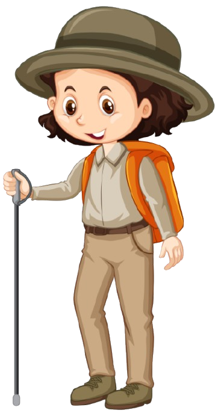
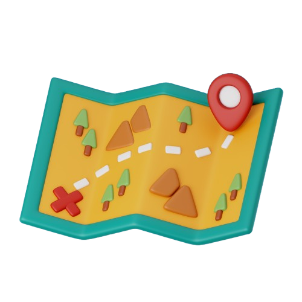

SELAMAT DATANG DI DUNIA DINOSAURUS
Mari menjelajah bersama kami dalam mencari lokasi telur emas melalui teka-teki koordinat kartesius dan konsep Persamaan Garis Lurus (PGL).
Kenalan Dulu Yuk!

ARA
Tugas: Si Penentu Arah Gradien. Ara akan membantumu memahami seberapa miring jalur petualanganmu!

DIKO
Tugas: Si Ahli Rumus. Diko bertugas menjelaskan konsep Persamaan Garis Lurus (PGL) agar peta penyelamatanmu akurat!

MAYA
Tugas: Si Penjelajah Utama. Kamu akan mengendalikan Maya untuk berjalan di hutan koordinat mencari telur emas!
RENO
Tugas: Si Pencari Clue. Reno akan memberikan petunjuk jika kamu merasa tersesat saat menghitung koordinat!
ZIVA
Tugas: Si Pendamping Setia. Ziva bertugas memastikan semua langkahmu sudah sesuai dengan rute penyelamatan!

PETUNJUK PERMAINAN
Pahami aturan main, misi penyelamatan, dan cara mendapatkan skor bintang tertinggi di sini!

MATERI BELAJAR
Pelajari konsep Persamaan Garis Lurus (PGL) agar kamu bisa membuat jalur penyelamatan yang tepat!

PETA PETUALANGAN
Mulai misi pencarian telur emas di hutan koordinat. Gunakan rumusmu dan temukan harta karunnya!
TENTANG KAMI
Aplikasi ini dirancang sebagai media pembelajaran interaktif matematika untuk membantu siswa memahami grafik dan gradien garis lurus.
Petualangan Telur Dinosaurus
Panduan Strategi & Penggunaan Media Pembelajaran
Kata Pengantar
Puji syukur kami panjatkan ke hadirat Tuhan Yang Maha Esa. Buku panduan ini disusun sebagai pedoman bagi siswa SMP Kelas VIII untuk menaklukkan tantangan Persamaan Garis Lurus (PGL) melalui visualisasi petualangan yang nyata.
Game ini merupakan bagian dari penelitian skripsi di program studi Pendidikan Matematika, Universitas PGRI Semarang.
Tujuan Media
- Memvisualisasikan Gradien (m) secara konkret.
- Melatih logika presisi dalam menentukan rute.
Manfaat Belajar
- Memahami hubungan antar koordinat $(x, y)$.
- Meningkatkan kemampuan pemecahan masalah matematika.
Langkah Menuju Kemenangan
Sistem Peringkat Bintang
Ayo Belajar!

Tujuan Pembelajaran
Pahami capaian pembelajaran serta tujuan pembelajaran yang diperlukan untuk menuntaskan misi

Pengertian Persamaan Garis Lurus
Pelajari definisi dan bentuk umum dari PGL di sini!

Gradien
Pahami konsep kemiringan garis dan cara menghitungnya.

Menentukan Persamaan Garis Lurus
Cara membuat jalur penyelamatan menggunakan rumus sakti.

Latihan
Uji kemampuanmu sebelum memulai misi penyelamatan Dino!
Ayo Berpetualang!
Tentang Game Ini
Media Pembelajaran Interaktif Matematika
Misi Game
Petualangan Telur Dinosaurus dirancang untuk membantu siswa memahami konsep Persamaan Garis Lurus secara mandiri melalui pengalaman bermain yang seru dan menantang.
Pengembang
Ade Ziyana Walidah Fatma
Mahasiswa Pendidikan Matematika yang berfokus pada pengembangan media pembelajaran inovatif berbasis teknologi.
Instansi
Universitas PGRI Semarang
Fakultas Pendidikan Matematika, Ilmu Pengetahuan Alam, dan Teknologi Informasi.